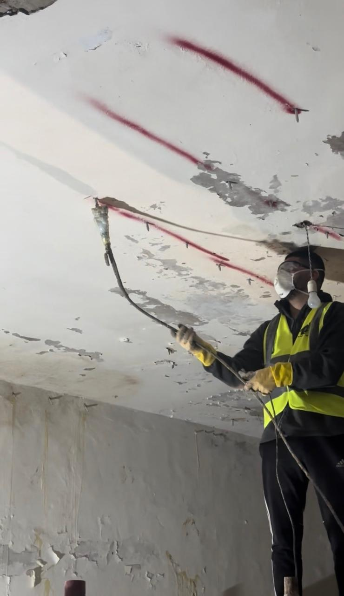
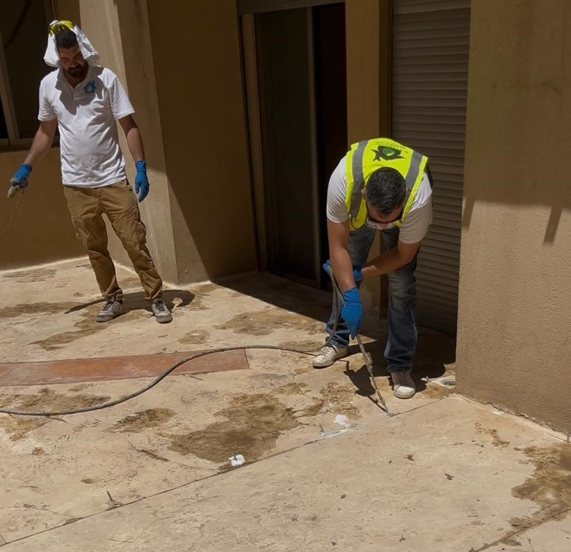
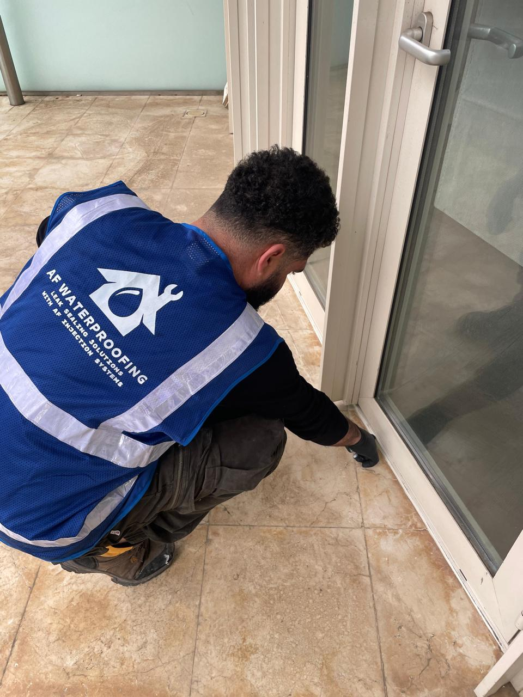
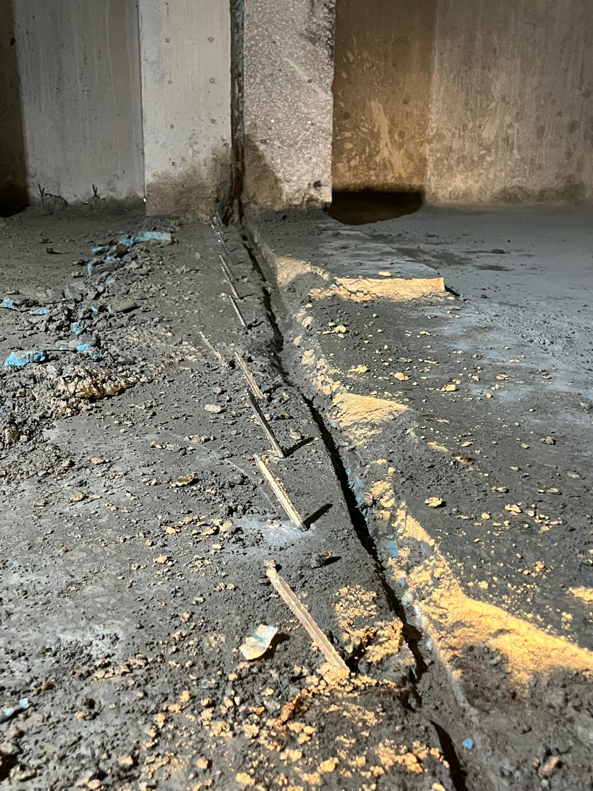
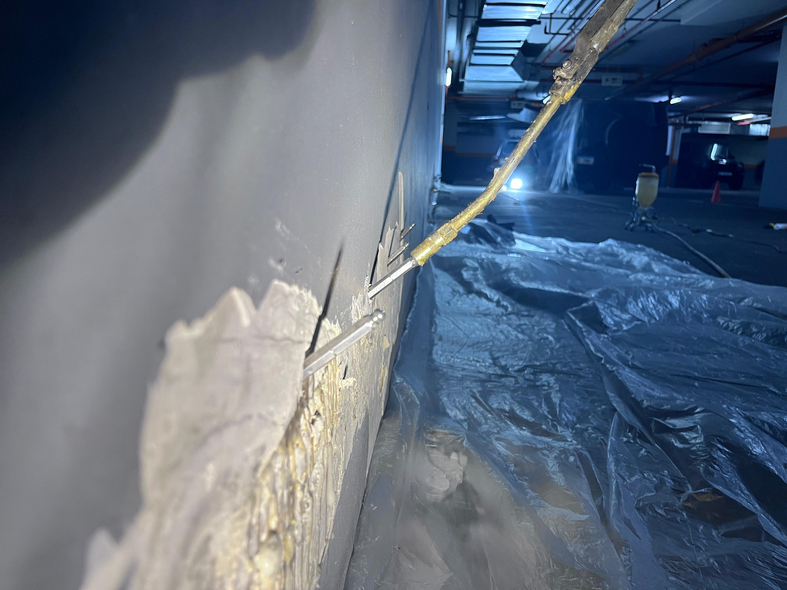
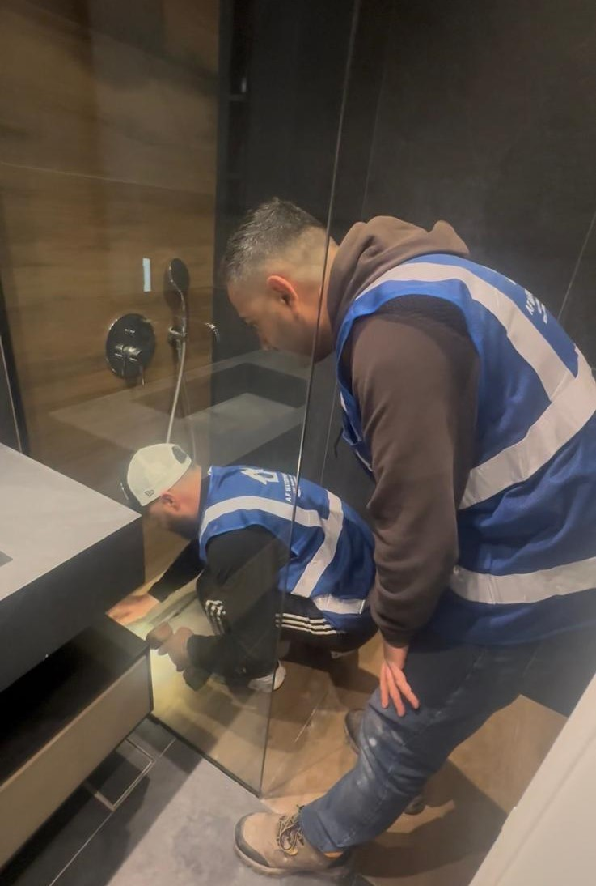
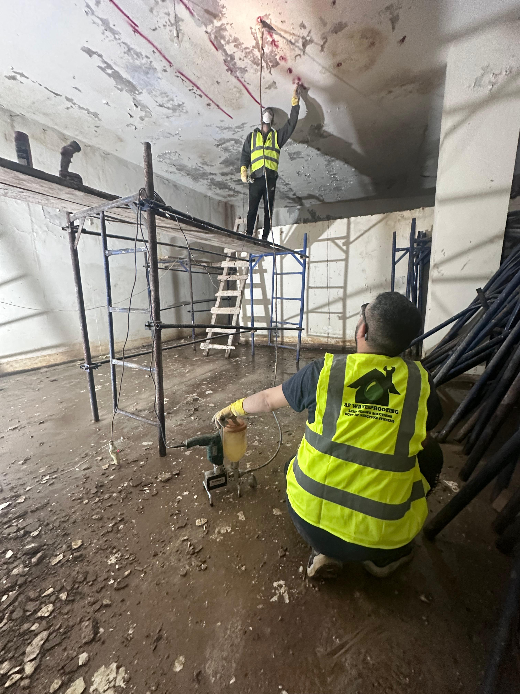
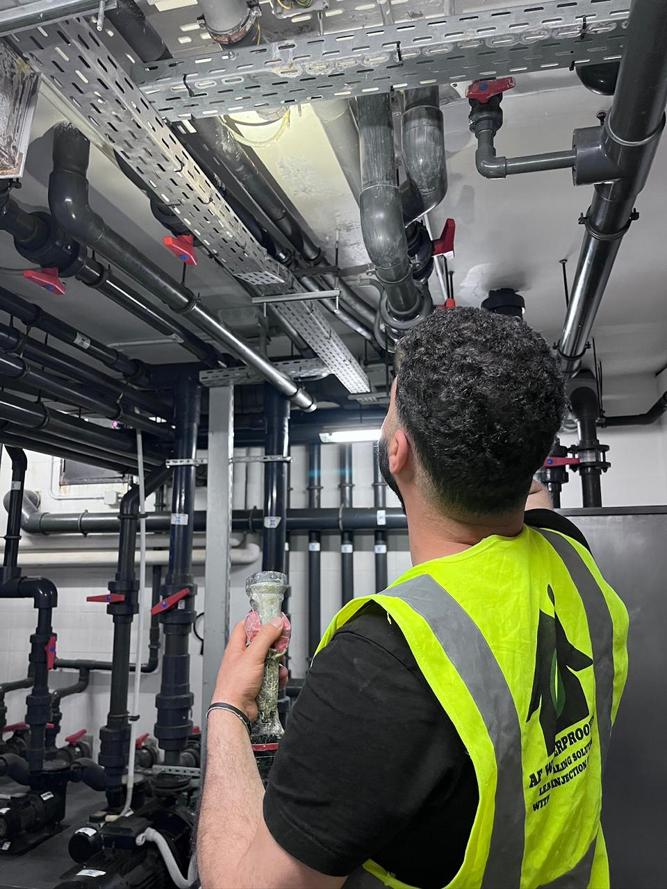
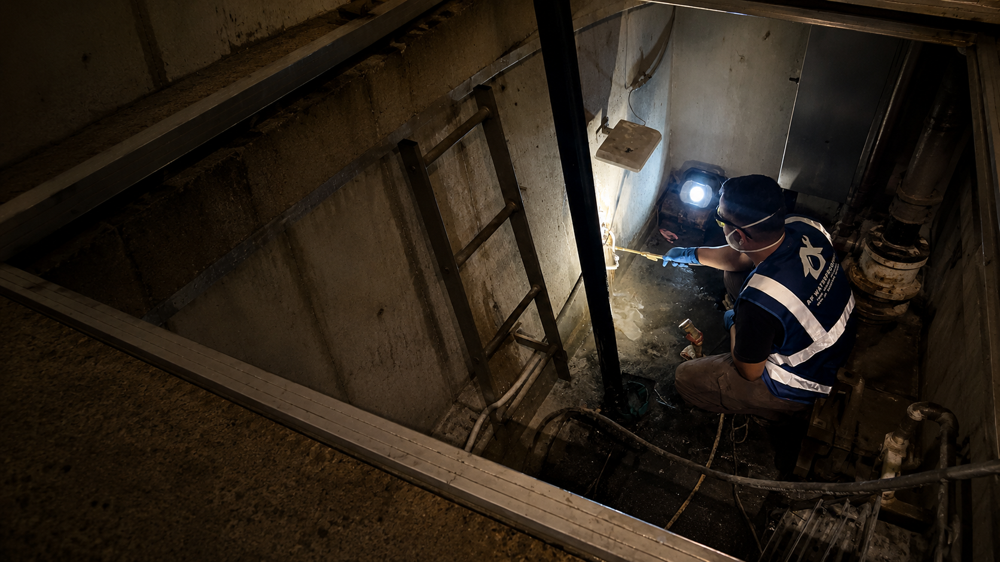

01
Concrete Leak Repair
Repair for leaks passing through concrete, joints and structural surfaces.
Request Inspection →Professional Waterproofing & Leak Repair Solutions

Repair for leaks passing through concrete, joints and structural surfaces.
Request Inspection →
Professional waterproofing systems for roofs exposed to weather and humidity.
Request Inspection →
Leak repair and waterproofing for balconies and outdoor surfaces.
Request Inspection →
Professional crack treatment to stop water movement permanently.
Request Inspection →
Solutions for moisture, damp patches and humidity problems.
Request Inspection →
Waterproofing systems for kitchens, bathrooms and wet spaces.
Request Inspection →Professional waterproofing and sealing systems for swimming pools and water tanks.
Request Inspection →
Waterproofing solutions for basements, foundations and below-grade structures.
Request Inspection →
Even in the most challenging technical rooms, we can stop and fix water leaks.
Request Inspection →
Lift shafts are prone to leaks because water naturally flows downward through joints and concrete. Even small cracks can let water into the shaft, creating safety hazards, electrical risks, and mould problems.
Request Inspection →Send us details and we will help identify the source of the problem.
Contact Us